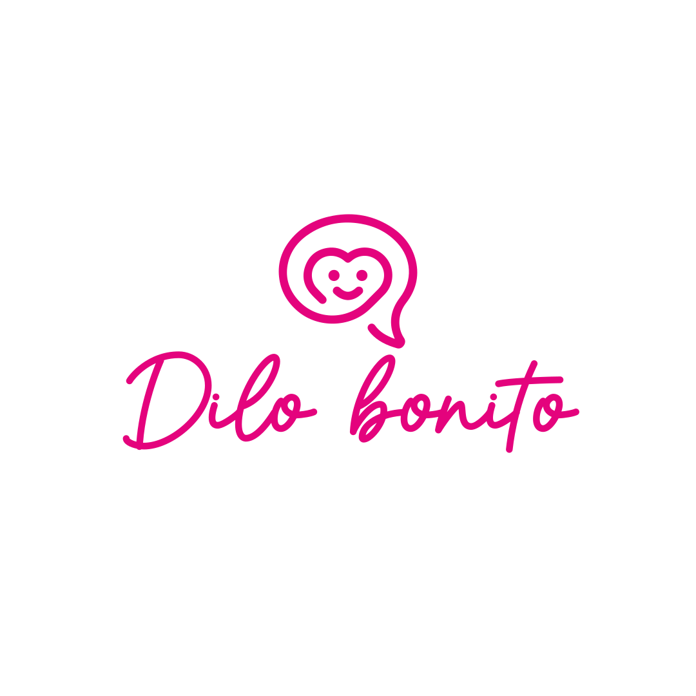

DJANGO · ORM
Desarrollo Web con Django - GiftBoxes Dilo Bonito
Descripción: Desarrollo de una aplicación web para gestionar Gift Boxes, clientes y pedidos.
Desafío: Integrar frontend y backend, aplicar ORM y evitar duplicación de clientes.
Solución: Implementé un CRUD completo con Django, validaciones con formularios y lógica con get_or_create().
Tecnologías: Python, Django, SQLite, HTML, CSS, Bootstrap.
Aprendizajes: ORM, relaciones entre modelos, formularios, validaciones y conexión entre interfaz y lógica backend.
Métricas: Mejor organización de pedidos, reducción de duplicados y flujo más claro de compra.
Habilidades: UX/UI, desarrollo web, resolución de problemas, pensamiento estructurado.
Justificación: Elegí este proyecto porque representa mi perfil híbrido entre diseño y desarrollo.